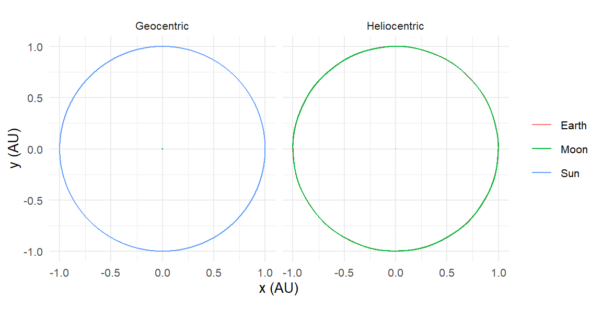
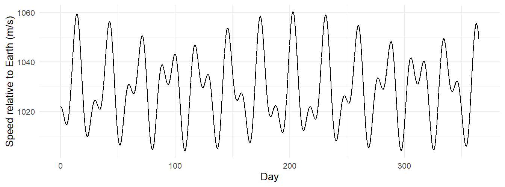
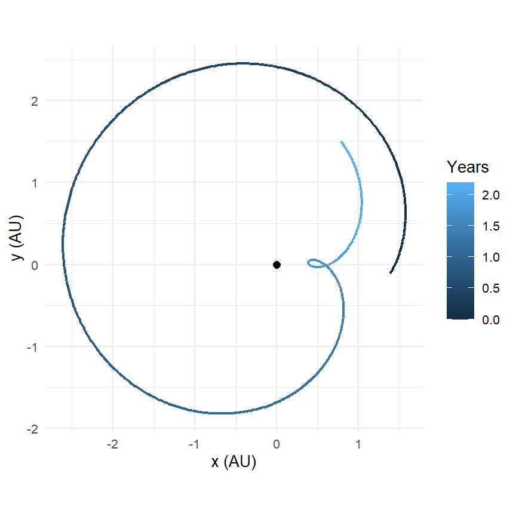
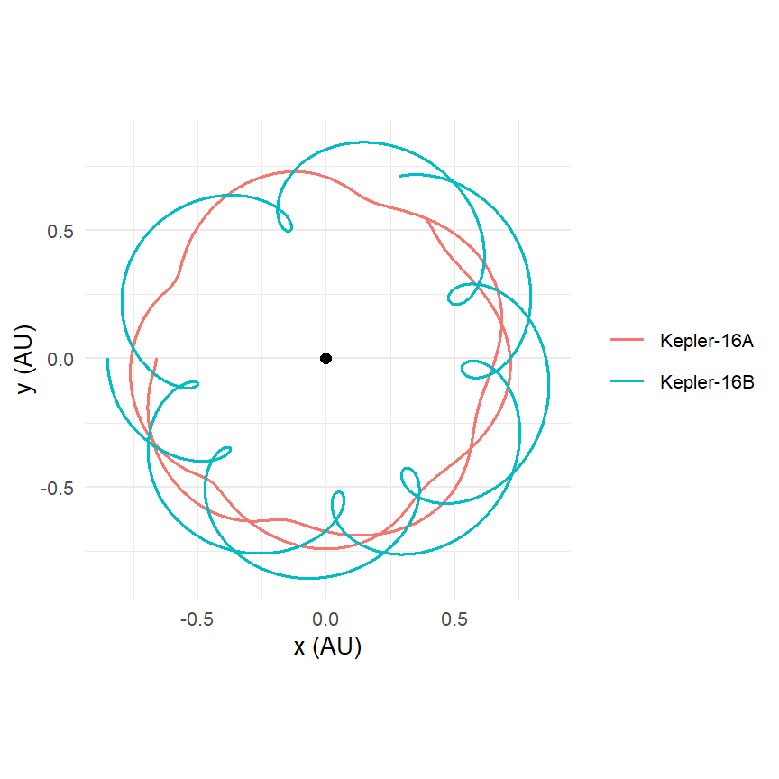
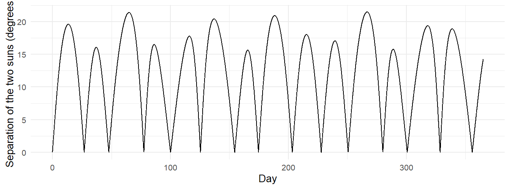
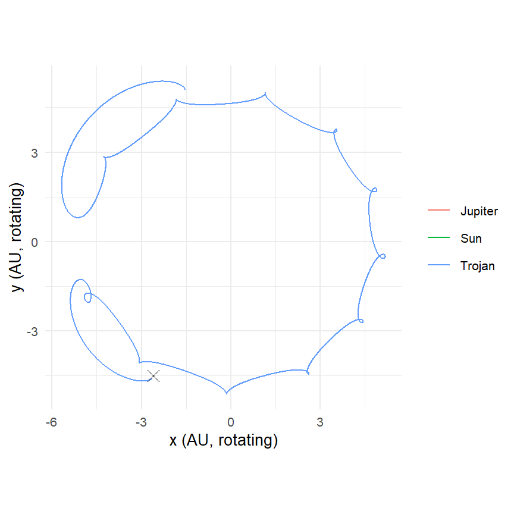

sem <- create_system() |>
add_sun() |>
add_body("Earth", mass = mass_earth, x = distance_earth_sun, vy = speed_earth) |>
add_body("Moon", mass = mass_moon,
x = distance_earth_sun + distance_earth_moon,
vy = speed_earth + speed_moon) |>
simulate_system(time_step = seconds_per_hour, duration = seconds_per_year)10 Reference Frames
A simulation has to put its origin somewhere, and the place that is convenient for setting up a system is often the wrong place for understanding it. The solar system is easiest to build with the Sun at the origin; the history of astronomy is largely the story of people who stood on Earth and tried to make sense of what they saw from there. shift_reference_frame() lets you stand anywhere. This chapter uses it to reproduce the three observations that defined pre-Copernican astronomy (the Moon’s orbit, the retrograde loops of Mars, and the fact that the planets’ loops are tied to the Sun’s position), then turns it on a system no one has ever stood in, Kepler-16b, and finally builds by hand the one kind of frame the package does not provide: a rotating one.
10.1 Moving the camera
shift_reference_frame(sim, "Earth") subtracts Earth’s position and velocity from every body at every time step:
\[ \mathbf{r}_i' = \mathbf{r}_i - \mathbf{r}_{\mathrm{Earth}}, \qquad \mathbf{v}_i' = \mathbf{v}_i - \mathbf{v}_{\mathrm{Earth}}. \]
Earth lands at the origin with zero velocity for the whole run; everything else is now described relative to Earth. The transformation is applied after the simulation, to the output tibble, and it changes no physics: every force was computed in the original frame, and the shifted data is the same motion seen from a different place.
One subtlety is worth stating because the vignette does not. The new frame is not inertial. Earth accelerates (it is orbiting the Sun), so a frame attached to it is an accelerated frame, and if you tried to do dynamics in it, Newton’s second law would need fictitious forces added. For looking at a trajectory that has already been computed, none of that matters. The shifted coordinates are exactly what an observer riding on Earth would record, fictitious forces and all, because the observer does not compute anything; they just watch. The same holds for a frame attached to any body, and later in the chapter for a rotating frame.
10.2 The geocentric Moon
Build the Sun, Earth, and Moon heliocentrically, as the documentation does, by giving the Moon Earth’s position and velocity plus its own:
In the heliocentric frame the Moon’s path and Earth’s are indistinguishable: 384,000 km is a quarter of a percent of an AU. In Earth’s frame the Moon is a clean ellipse and the Sun sweeps a wide circle once a year:
helio <- sem |> mutate(frame = "Heliocentric")
geo <- sem |> shift_reference_frame("Earth") |> mutate(frame = "Geocentric")
bind_rows(helio, geo) |>
ggplot(aes(x / distance_earth_sun, y / distance_earth_sun, color = id)) +
geom_path() +
coord_equal() +
facet_wrap(~ frame) +
labs(x = "x (AU)", y = "y (AU)", color = NULL)
The shifted velocities are as useful as the positions. The Moon’s speed relative to Earth, read directly from the shifted vx, vy, vz, oscillates once per orbit, faster at perigee and slower at apogee, which is Kepler’s second law as a time series:
geo |>
filter(id == "Moon") |>
mutate(speed = sqrt(vx^2 + vy^2 + vz^2)) |>
ggplot(aes(time / seconds_per_day, speed)) +
geom_line() +
labs(x = "Day", y = "Speed relative to Earth (m/s)")
10.3 Retrograde Mars
For most of the year Mars drifts eastward against the stars. Every 26 months it slows, stops, moves backward for about two months, stops again, and resumes. Ptolemy explained the loops with epicycles; Copernicus explained them as the view from a moving platform. Here is the Copernican explanation, run:
sem_mars <- create_system() |>
add_sun() |>
add_planet("Earth", parent = "Sun") |>
add_planet("Mars", parent = "Sun", nu = 60) |>
simulate_system(time_step = seconds_per_day, duration = seconds_per_year * 2.2)
mars_geo <- sem_mars |>
shift_reference_frame("Earth", keep_center = FALSE) |>
filter(id == "Mars")mars_geo |>
ggplot(aes(x / distance_earth_sun, y / distance_earth_sun,
color = time / seconds_per_year)) +
geom_path(linewidth = 0.8) +
annotate("point", x = 0, y = 0, size = 2) +
coord_equal() +
labs(x = "x (AU)", y = "y (AU)", color = "Years")
The loop is real and it is nothing but geometry. We can measure it. Mars’s geocentric longitude is the angle of its position vector in Earth’s frame; it increases when Mars moves direct and decreases when it moves retrograde:
retro <- mars_geo |>
mutate(longitude = unwrap(atan2(y, x)),
direction = if_else(c(0, diff(longitude)) < 0, "retrograde", "direct"))
retro |>
filter(direction == "retrograde") |>
summarise(starts_day = min(time) / seconds_per_day,
ends_day = max(time) / seconds_per_day,
duration_days = (max(time) - min(time)) / seconds_per_day)
#> # A tibble: 1 × 3
#> starts_day ends_day duration_days
#> <dbl> <dbl> <dbl>
#> 1 598 659 61About ten weeks of backward motion, which is what the almanacs list, and the midpoint is the opposition, when Earth passes directly between Mars and the Sun. The retrograde interval is always centered on opposition. Ptolemy’s model had to build that coincidence in by hand, by tying the epicycle’s rotation to the Sun’s; Copernicus’s gets it for free, because the loop is Earth’s motion.
10.4 The Moon’s path around the Sun
Here is a puzzle that trips up almost everyone. From Earth, the Moon goes around us in a circle. From the Sun, what does its path look like? The tempting answer is a wavy line, looping back on itself as the Moon swings around Earth. The actual answer is that the Moon’s heliocentric path is everywhere concave toward the Sun: it never loops, never even straightens out, and looks like a slightly wobbly circle. Chapter 3 gave the reason: the Sun’s pull on the Moon is more than twice Earth’s, so the Moon’s acceleration always points mostly at the Sun, and a path whose acceleration always points toward a point is always curving toward that point.
The simulation lets us check the sign of the curvature directly. A curve bends toward the side its acceleration points to, and the direction of bending is given by the sign of \(\mathbf{v}\times\mathbf{a}\). For a path that always bends toward the origin, \((\mathbf{v}\times\mathbf{a})_z\) never changes sign. Estimate \(\mathbf{a}\) by differencing the velocity:
sem |>
filter(id == "Moon") |>
mutate(ax = c(NA, diff(vx)) / seconds_per_hour,
ay = c(NA, diff(vy)) / seconds_per_hour,
curvature_sign = sign(vx * ay - vy * ax)) |>
count(curvature_sign)
#> # A tibble: 2 × 2
#> curvature_sign n
#> <dbl> <int>
#> 1 1 8766
#> 2 NA 1Every single step curves the same way. Compare Earth seen from the Moon’s frame in the next exercise: there the Sun’s effect cancels (both bodies fall toward it together) and the loop is a loop.
10.5 Two sunsets
Kepler-16b is a real planet with two suns. From its surface, what does the sky do? Rebuild the system from Chapter 9 and shift to the planet:
AU <- distance_earth_sun
m_A <- 0.69 * mass_sun
m_B <- 0.20 * mass_sun
m_p <- 0.333 * mass_jupiter
add_eccentric_binary <- function(system, m_A, m_B, a_bin, e, ids) {
M <- m_A + m_B
d_p <- a_bin * (1 - e)
u_p <- sqrt(gravitational_constant * M / a_bin * (1 + e) / (1 - e))
system |>
add_body(ids[1], mass = m_A, x = d_p * m_B / M, vy = u_p * m_B / M) |>
add_body(ids[2], mass = m_B, x = -d_p * m_A / M, vy = -u_p * m_A / M)
}
r_p <- 0.7048 * AU
kepler16 <- create_system() |>
add_eccentric_binary(m_A, m_B, a_bin = 0.2243 * AU, e = 0.159,
ids = c("Kepler-16A", "Kepler-16B")) |>
add_body("Kepler-16b", mass = m_p, x = r_p,
vy = sqrt(gravitational_constant * (m_A + m_B) / r_p)) |>
simulate_system(time_step = seconds_per_hour, duration = seconds_per_year)
from_planet <- kepler16 |>
shift_reference_frame("Kepler-16b", keep_center = FALSE)from_planet |>
ggplot(aes(x / AU, y / AU, color = id)) +
geom_path(linewidth = 0.6) +
annotate("point", x = 0, y = 0, size = 2) +
coord_equal() +
labs(x = "x (AU)", y = "y (AU)", color = NULL)
The spirograph pattern is two motions combined: the stars circle the planet once per planetary year (which is the planet’s own orbit, seen from the planet), and they circle each other every 41 days on top of it. The quantity an inhabitant would notice is the angle between the two suns in the sky. With both stars’ positions relative to the planet, that is one arccosine:
star_a <- from_planet |> filter(id == "Kepler-16A") |> select(time, xa = x, ya = y, za = z)
star_b <- from_planet |> filter(id == "Kepler-16B") |> select(time, xb = x, yb = y, zb = z)
inner_join(star_a, star_b, by = "time") |>
mutate(cos_sep = (xa * xb + ya * yb + za * zb) /
(sqrt(xa^2 + ya^2 + za^2) * sqrt(xb^2 + yb^2 + zb^2)),
separation_deg = acos(cos_sep) * 180 / pi) |>
ggplot(aes(time / seconds_per_day, separation_deg)) +
geom_line() +
labs(x = "Day", y = "Separation of the two suns (degrees)")
Twice every 41 days the two suns line up (separation near zero, one eclipsing the other) and twice they stand as far apart as they ever get, about forty Moon-widths. A double sunset on Kepler-16b would be two suns a hand’s width apart going down together, with the gap between them changing noticeably from one week to the next.
10.6 A rotating frame, by hand
Every frame so far has been a translation: the origin moves, the axes do not turn. There is one more kind of frame that matters in orbital mechanics, and it is the one in which a binary star, or the Sun and Jupiter, stand still: a frame that rotates with them. In a rotating frame the dynamics picks up centrifugal and Coriolis terms, and the five famous equilibrium points of the three-body problem, the Lagrange points, are the places where those terms balance gravity. The package has no rotating-frame function, but dplyr does not need one. If the frame rotates at angular rate \(\omega\) about the \(z\) axis, the co-rotating coordinates are
\[ x' = x\cos\omega t + y\sin\omega t, \qquad y' = -x\sin\omega t + y\cos\omega t, \tag{10.1}\]
which just undoes the rotation that has accumulated by time \(t\).
Set up the Sun and Jupiter as a circular binary about their barycenter (Chapter 9’s add_binary()), and a small body at the \(L_4\) point, which sits at the third corner of an equilateral triangle with the two masses, 60 degrees ahead of Jupiter. A body exactly at \(L_4\) moving at exactly the frame’s rotation speed stays there forever; nudge it slightly, and it wanders around \(L_4\) on a tadpole orbit. That is where the Trojan asteroids live.
add_binary <- function(system, m_A, m_B, d, ids) {
r_A <- d * m_B / (m_A + m_B); r_B <- d * m_A / (m_A + m_B)
v_A <- sqrt(gravitational_constant * m_B^2 / ((m_A + m_B) * d))
v_B <- sqrt(gravitational_constant * m_A^2 / ((m_A + m_B) * d))
system |>
add_body(ids[1], mass = m_A, x = r_A, vy = v_A) |>
add_body(ids[2], mass = m_B, x = -r_B, vy = -v_B)
}
d <- distance_jupiter_sun
omega <- sqrt(gravitational_constant * (mass_sun + mass_jupiter) / d^3)
# Jupiter sits at angle 180 degrees moving counterclockwise; L4 is 60 degrees
# ahead of it, at the apex of the equilateral triangle below the x axis.
sun_x <- d * mass_jupiter / (mass_sun + mass_jupiter)
jup_x <- -d * mass_sun / (mass_sun + mass_jupiter)
L4 <- c((sun_x + jup_x) / 2, -sqrt(3) / 2 * d)
p <- L4 * 1.02 # nudged 2% outward
v <- omega * c(-p[2], p[1]) # rigid co-rotation
trojan <- create_system() |>
add_binary(mass_sun, mass_jupiter, d, ids = c("Sun", "Jupiter")) |>
add_body("Trojan", mass = 1e15, x = p[1], y = p[2], vx = v[1], vy = v[2]) |>
simulate_system(time_step = seconds_per_day, duration = seconds_per_year * 150)trojan |>
mutate(theta = omega * time,
xr = x * cos(theta) + y * sin(theta),
yr = -x * sin(theta) + y * cos(theta)) |>
ggplot(aes(xr / AU, yr / AU, color = id)) +
geom_path() +
annotate("point", x = L4[1] / AU, y = L4[2] / AU, shape = 4, size = 3) +
coord_equal() +
labs(x = "x (AU, rotating)", y = "y (AU, rotating)", color = NULL)
In the inertial frame the Trojan’s path is an unremarkable near-circle at Jupiter’s distance. In the rotating frame it is a closed loop around a point in empty space, held there by nothing but the combined gravity of the Sun and Jupiter in a frame where that gravity has to fight the centrifugal force. The \(\times\) marks \(L_4\). Jupiter has about ten thousand known Trojans doing exactly this, and Earth has two. Chapter 11 looks at the other Lagrange points, which are not so hospitable.
Exercises
Exercise 10.1 Shift the Sun-Earth-Moon run to the Moon’s frame and plot Earth’s path. Why is it a closed loop when the Moon’s heliocentric path is not?
Exercise 10.2 Repeat the retrograde analysis for Venus seen from Earth. Inner planets go retrograde too, but around inferior conjunction (between Earth and the Sun) rather than opposition. Confirm this, and compare the retrograde duration with Mars’s.
Exercise 10.3 Put a second Trojan at \(L_5\), 60 degrees behind Jupiter, and confirm it librates too. Then put one at \(L_3\), on the far side of the Sun from Jupiter, and watch how long it stays.
Exercise 10.4 Nudge the \(L_4\) Trojan outward by 6% instead of 2%. The libration should grow into a horseshoe orbit that wraps around \(L_4\), \(L_3\), and \(L_5\) together. Find the nudge at which the tadpole becomes a horseshoe.
Exercise 10.5 The two stars of Kepler-16 have radii of about \(0.65\) and \(0.23\) solar radii. Convert each star’s distance from the planet into an apparent angular diameter over the year and plot both. How large do the suns look compared with ours, which spans half a degree?